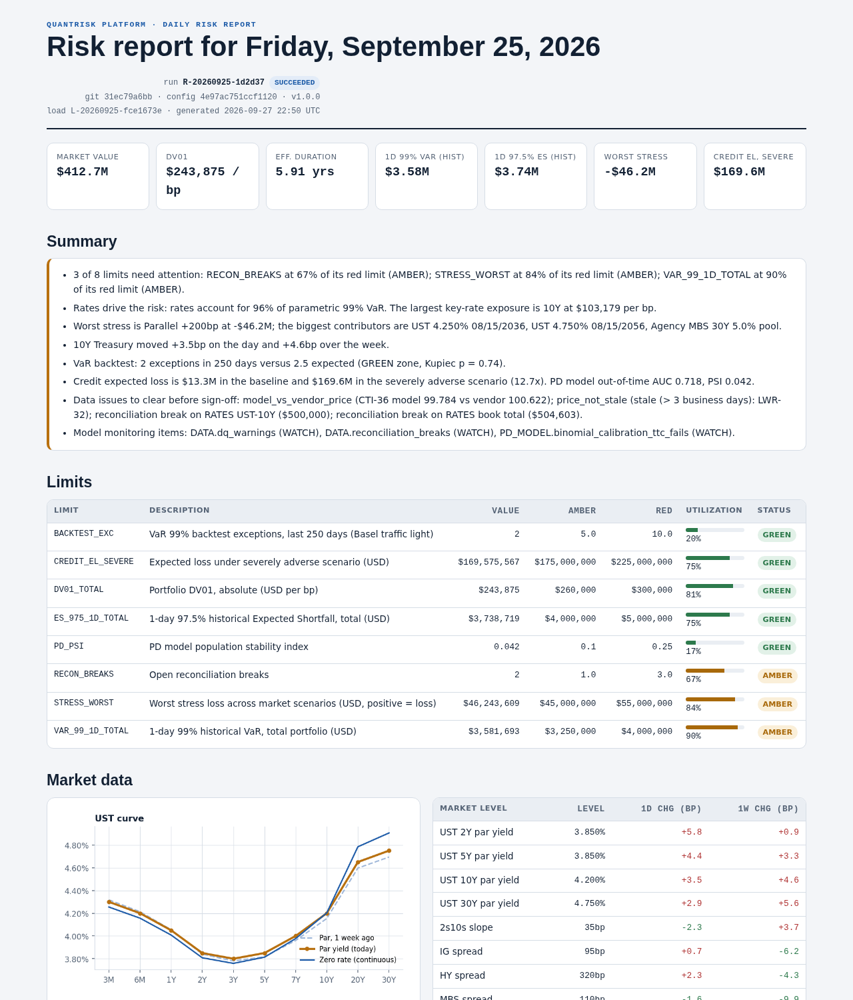
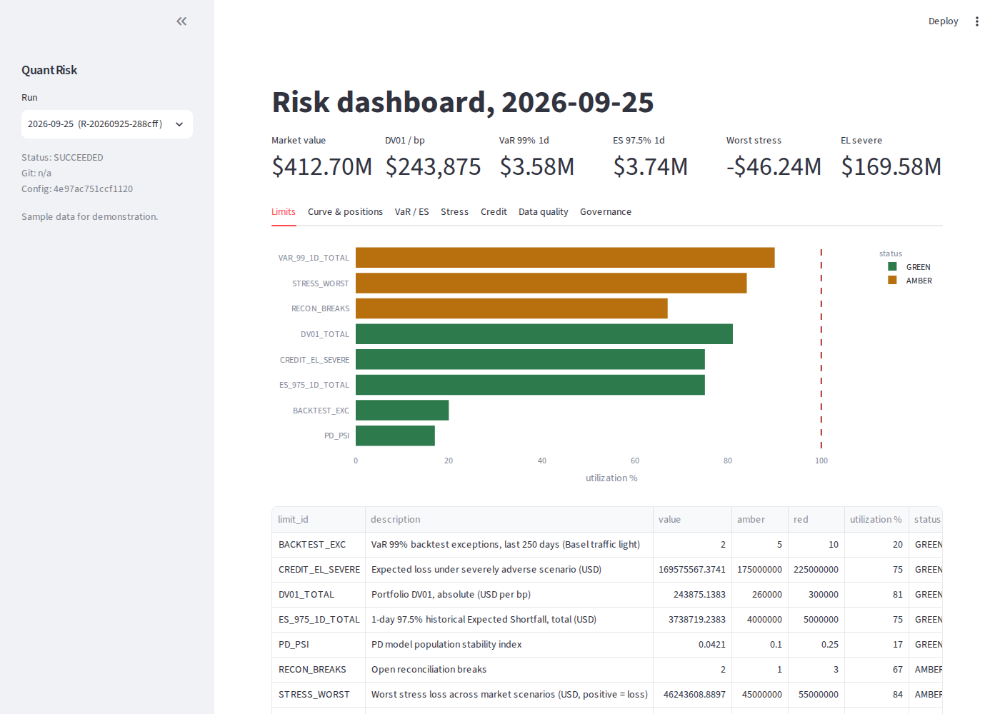

A daily risk pipeline that turns a bond and credit portfolio into the numbers a risk desk acts on: valuations and key-rate durations, Value-at-Risk and Expected Shortfall, a named-scenario stress engine, and a credit PD model with macro stress — all validated, logged, and reported.
Output of one demo run (as of Fri, Sep 26 2025) on synthetic holdings — illustrative only.
A reproducible batch pipeline with lineage, data-quality gates, and governance built in.
Historical, parametric, and Monte-Carlo VaR and Expected Shortfall across confidence levels and horizons, with a rolling backtest against realized P&L.
Curve bootstrap, bond and MBS pricing, DV01 and key-rate durations, and portfolio aggregation.
Named rate, spread, and volatility scenarios from config, including parallel shifts, steepeners, and crisis replays.
A PD model with a master rating scale and macro stress, producing expected and severe credit loss.
Ingestion with DQ rules that can hold a run, reconciliation checks, and a config hash plus git SHA stamped on every run.
Model validation tests, a limits framework with RAG status, and a model-inventory view for oversight.
The generated HTML report and the interactive Streamlit dashboard — same persisted results behind both.

